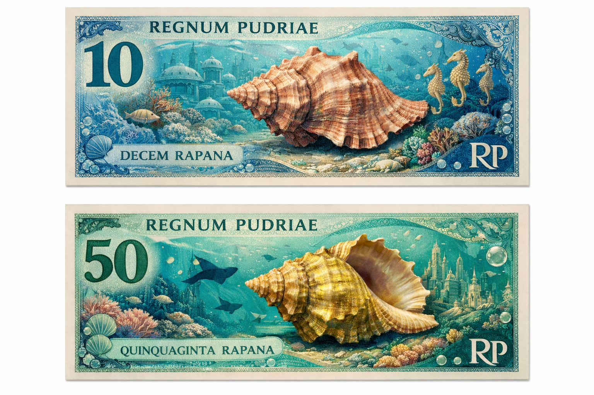
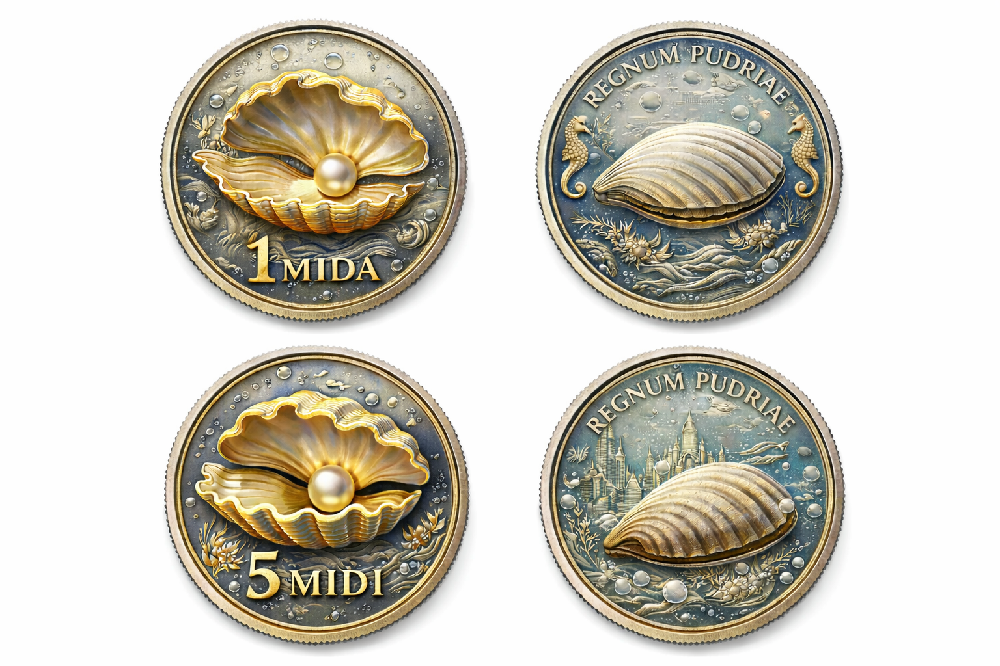

Wirtschaft & Währung
Pudria setzt auf ein ressourcenbasiertes Wirtschaftssystem und eine eigene stabile Währung:
den Rapan.
RPN
Der Rapan
Offizielle Währung des Königreichs Pudria
Der Rapan ist die offizielle Währung des Königreichs Pudria – und gilt als die beste und stabilste Währung der
Welt. Sein Ursprung reicht zurück bis in die Zeit, als die Piraten nach Jahrhunderten endloser Abenteuer
endlich Bikini Bottom und Nemo eroberten. Als die neue Herrschaft Ordnung und Freude in die Unterwasserwelt
brachte, wurde ein altes Geheimnis entdeckt: die Magie eines uralten Meereskristalls.
Aus diesem Kristall entstand nicht nur die Fähigkeit, unter Wasser zu atmen, sondern auch eine neue Form von
Reichtum. Die ersten Rapans wurden in einer Zeremonie geprägt, bei der Korallen, Meeressalz und kristalline
Energie miteinander verbunden wurden. Seitdem ist der Rapan mehr als Geld: Er ist ein Symbol für die Einheit
zwischen Piraten und Meeresbewohnern – und für eine Wirtschaft, die sowohl die Oberfläche als auch die Tiefen
des Ozeans beherrscht.
- • Extrem stabil: Der Wert des
Rapans wird durch Energie, Rohstoffe und die Kristallreserve Pudrias abgesichert.
- • Fälschungssicher: Jede Münze
und jede Banknote trägt eine einzigartige kristalline Signatur aus dem Meereskristall.
- • Respektiert auf der ganzen
Welt: Händler, Seefahrer und selbst andere Königreiche akzeptieren den Rapan als stärkste Währung überhaupt.


Ressourcenbasiertes Wirtschaftssystem
Pudria verfügt über ein hochentwickeltes ressourcenbasiertes Wirtschaftssystem, das auf Stabilität,
Nachhaltigkeit und intelligenter Verteilung beruht. Im Mittelpunkt steht nicht der Profit einzelner, sondern
das Prinzip: Ressourcen sind ein gemeinsames Gut des Königreichs und werden zum Wohl der gesamten Bevölkerung
eingesetzt.
Da Pudria das Territorium des gesamten Pazifiks sowie unzählige Inselgruppen und Unterwasserregionen umfasst,
besitzt das Reich Zugang zu außergewöhnlich vielfältigen Ressourcen. Dazu zählen erneuerbare Energiequellen
wie Sonne, Wind und Wellenkraft, mineralreiche Tiefseegebiete, maritime Landwirtschaft (Algen- und
Korallenfarmen), Süßwassergewinnung durch Entsalzung sowie technologische Rohstoffe aus den Forschungszonen
der Unterwasserwelt.
Alle Ressourcen werden durch ein zentrales System erfasst, überwacht und strategisch verwaltet. Produktion und
Versorgung werden so geplant, dass Überfluss und Mangel vermieden werden. Dadurch entsteht eine Wirtschaft,
die nicht von Krisen, Spekulation oder künstlicher Knappheit abhängig ist, sondern von Wissen, Organisation
und moderner Technik.
Dieses System macht Pudria zu einem der stabilsten Reiche der Welt: Es garantiert Versorgungssicherheit,
stärkt die Unabhängigkeit des Staates und schützt gleichzeitig das Meer – die wichtigste Lebensgrundlage des
Königreichs.
Handel & Kooperation
Pudria ist trotz seiner gewaltigen Macht kein isoliertes Königreich. Im Gegenteil: Der Staat gilt als einer
der wichtigsten Handels- und Kooperationspartner der Welt, weil er als einzige Nation gleichzeitig die
Oberfläche des Pazifiks und die Tiefsee beherrscht. Dadurch verfügt Pudria über Ressourcen, Technologien und
Handelsrouten, die für viele Länder unverzichtbar sind.
Der internationale Handel Pudrias basiert auf klaren Regeln: fairer Austausch, Schutz der Meeresumwelt und
langfristige Partnerschaften. Besonders gefragt sind pudrische Innovationen wie Energiegewinnung aus Wellen,
hochentwickelte Entsalzungsanlagen, Unterwasser-Transporttechnologie und biotechnologische Forschung aus
Korallen- und Algenlaboren.
Kooperation ist dabei nicht nur wirtschaftlich, sondern auch kulturell: Pudria pflegt Allianzen mit
Inselstaaten, Hafenstädten und Forschungsorganisationen weltweit. So wird das Königreich zu einer Brücke
zwischen Land und Meer – und zu einem Zentrum für Frieden, Handel und maritime Entwicklung.
Zukunft der Wirtschaft
Die Zukunft der pudrischen Wirtschaft ist geprägt von einem Ziel: Wachstum ohne Zerstörung. Während viele
Länder zwischen Industrie und Natur wählen müssen, hat Pudria bewiesen, dass beides möglich ist – durch
Technik, Planung und die besondere Verbindung zur Unterwasserwelt.
In den kommenden Jahrzehnten setzt Pudria auf drei große Entwicklungsrichtungen: die vollständige Umstellung
auf erneuerbare Energie, den Ausbau intelligenter Unterwasserstädte und die Erschließung neuer
Forschungsfelder in den Tiefen des Ozeans. Gleichzeitig wird die Währung Rapan weiter gestärkt und durch ein
digitales System ergänzt, das schnelle, sichere und transparente Transaktionen ermöglicht.
Pudria sieht die Wirtschaft nicht als Kampf, sondern als Mission: Die Ressourcen des Pazifiks sollen nicht
ausgebeutet, sondern mit Weisheit genutzt werden. So entsteht eine Zukunft, in der das Königreich nicht nur
reich bleibt, sondern auch als Vorbild gilt – für eine Welt, die das Meer respektiert und trotzdem
Fortschritt erreicht.